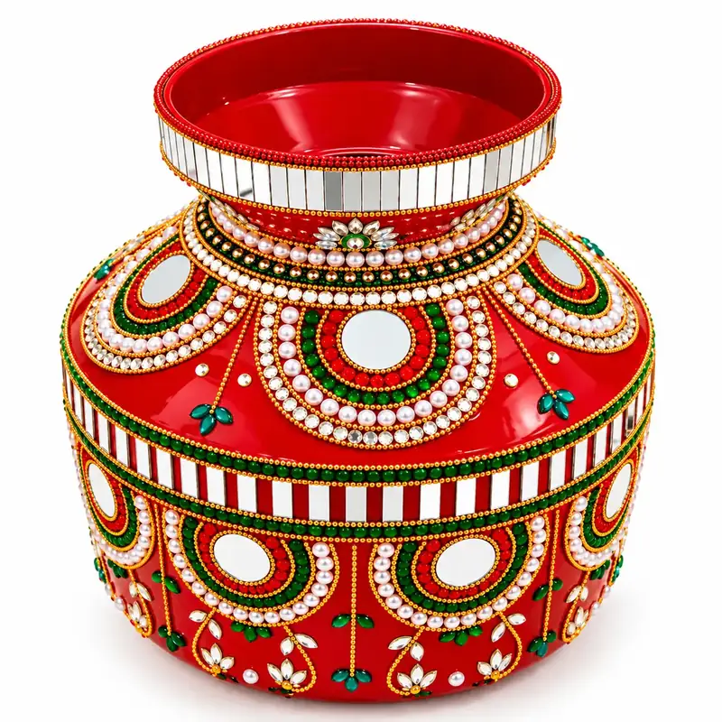

Decorated Kalash for Wedding: Ideas and Buying Guide
The kalash holds an important place in Indian weddings, from welcome rituals to the main ceremony and the entry into the new home. A decorated kalash for a wedding should look beautiful in photographs and also be sturdy enough to handle during a busy day. This guide covers where a kalash is used, kalash decoration ideas for marriage, and what to check before you buy.

🌐 Read in 6 Indian Languages / अपनी भाषा में पढ़ें: EN · हिं · मर · বাং · తె · த Select Language
Where a kalash is used in a wedding
- Near the mandap or ritual area as part of the puja setup
- In welcome and puja rituals, depending on your community
- At the entry to the new home (griha pravesh) in many families
- As part of wedding items presented or exchanged in some families
Rituals differ by community and family, so ask your elders or priest how many kalash you need and where they will be placed.
Kalash decoration ideas for marriage
- Red and gold: A classic wedding combination that photographs well.
- Mirror and pearl work: Mirrors catch the light of the diyas and pearls add an elegant finish.
- Coloured stones: Green, red and white stones give a lively, celebratory look.
- Matching the theme: Choose colours that sit well with your wedding decor and clothes.
- Mango leaves and flowers: Fresh leaves and flowers on the day complete the look.
1Decide how many you need
Count the places where a kalash will be used, such as the mandap, the puja table and the home entrance. Many families keep one large kalash for display and one smaller one for rituals.
2Check size and stability
A larger kalash makes a stronger visual statement near the mandap, while a smaller one is easier to carry. Make sure it sits steadily on a flat surface and is not top-heavy once filled or topped with a coconut.
3Look at the base and decoration
Ask what the base is made of and how the mirrors, pearls and stones are attached. Firmly fixed decoration matters on a wedding day, when the kalash is handled many times.
4Match it with your thali
A kalash and thali in the same colours look coordinated on the ritual table. If you want everything to match, look for a set that already includes both.
5Order early
Decorated items are prepared with care and shipping takes time. Order several weeks before the wedding and ask for current photos on WhatsApp so you can check the colour and finish.
Large wedding kalash or small puja kalash
A decorative kalash for a wedding is usually larger and more elaborate, built for display and photographs. A smaller puja kalash is easier for everyday use after the wedding. Many families buy one of each, so the big kalash stays as a showpiece and the small one is used for festivals.
After the wedding
A decorated kalash can stay as a keepsake or be used again for Diwali, Navratri and other pujas. Wipe it gently, dry it, and store it wrapped in soft cloth.
Wedding kalash options
Subhora has a Decorated Kalash for Wedding (₹1,500 plus shipping) with a red mirror-work finish, pearl details and coloured stones. For a matching set, see the Decorative Thali Set for Wedding, or choose the smaller Decorated Kalash for Puja. Confirm details on WhatsApp before ordering.
Frequently asked questions
How big should a wedding kalash be?
Sizes vary. A larger kalash looks better near the mandap or on a ritual table, while a smaller one is easier to carry. Confirm the dimensions on WhatsApp.
Can I buy a kalash and thali together?
Yes. A matching set looks coordinated. The Decorative Thali Set for Wedding includes a small decorated kalash along with the thali, katoris and diya.
How early should I order a decorated kalash?
Order several weeks before the wedding, so there is time for dispatch, delivery and any questions about colour or finish.